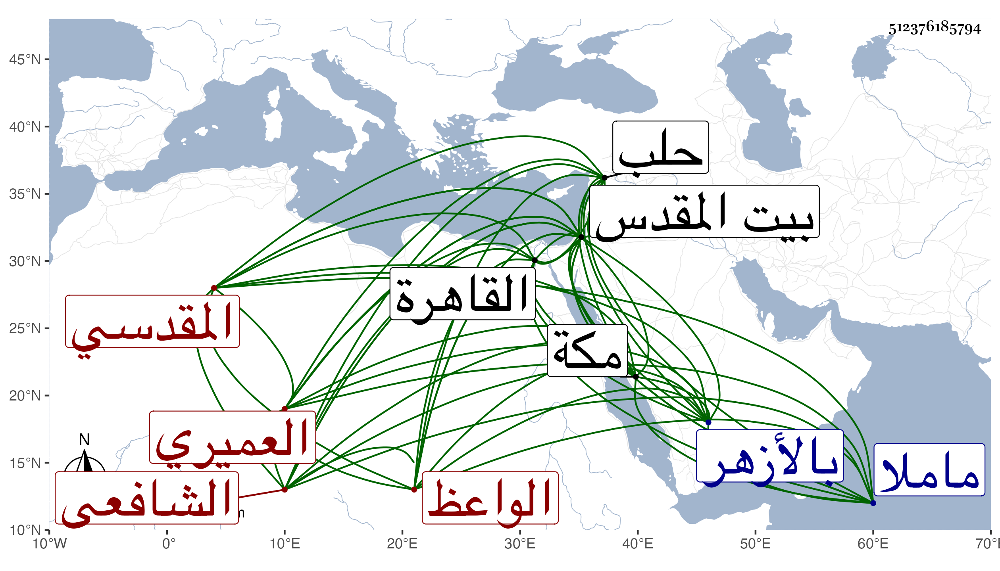

0902Sakhawi.DawLamic.ITO20230111-ara1.EIS1600.512376185794
Biography ID: 512376185794
149
أحمد بن عمر بن خليل الشهاب العميري المقدسي الشافعي الواعظ ويعرف بالعميري بالتصغير . ولد في صفر سنة اثنتين وثلاثين وثمانمائة ببيت المقدس وحفظ القرآن والعمدة والمنهاج وجمع الجوامع وألفيتي الحديث والنحو وغيرها ، وأخذ عن الزين ماهر والعماد بن شرف والشهاب الزبيدي والد أبي البقاء وكان يجعله وراء ظهره لكونه أمرد ، وبالقاهرة عن العلم البلقيني والمناوي وتخرج في الأصول بسراج الرومي وأبي الفضل المغربي وعن أولهما أخذ أشياء من العقليات ولبس خرقة التصوف من ابن رسلان وسمع الحديث من الجمال بن جماعة والتقي القلقشندي والشهاب بن حامد والزين القابوني في آخرين من أهل بلده والواردين عليها ، ودخل القاهرة غير مرة وأخذ فيها عن السيد النسابة والأمين الأقصرائي ومما أخذ عنه في التفسير وسيف الدين بل أخذ عن شيخنا وسمع أيضا على الشاوي والأبودري والمجد إمام الصرغتمشية في آخرين ودخل حلب فما دونها وتخرج في الوعظ بأبي العباس القدسي وعقد المجلس بالأزهر وبمكة حين جاور بها وببلده ورزق القبول في الوعظ ودرس وأفتى وحدث وعد في أعيان الوقت وقرره الأشرف قايتباي في مشيخة مدرسته بالقدس فدام بها حتى مات في ليلة السبت تاسع ربيع الأول سنة تسعين وصلى عليه من الغد النجم بن جماعة ثم دفن بتربة ماملا وكان له مشهد عظيم لم ير بتلك البلاد مثله وصلى عليه بالأزهر صلاة الغائب . وكان خيرا فاضلا متوددا متأدبا رحمه الله وإيانا .
